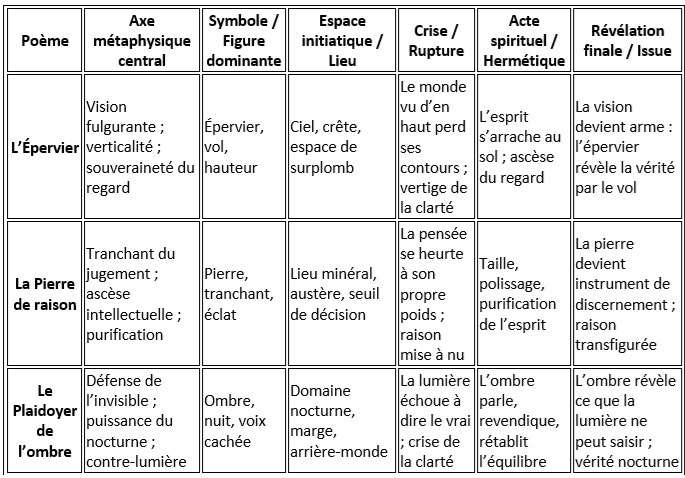
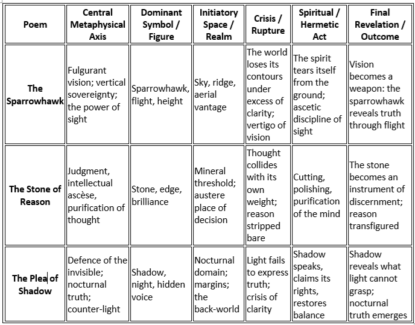

TABLEAU RECAPITULATIF (Généré par IA) - SUMMARY TABLE (IA generated), 2026
|
Voici le tableau de correspondances en français pour les trois poèmes du chapitre "Sous le signe de l’épervier" : "L’Épervier" · "La Pierre de raison" · "Le Plaidoyer de l’ombre". Je l’ai construit pour refléter la logique profonde du cycle : vision, tranchant, ascèse, ombre, vol, pierre, silence, clairvoyance. Chaque poème occupe une chambre distincte dans la même architecture initiatique. 1. L’épervier comme axe souverain Les trois poèmes se placent sous le signe d’un oiseau de proie, symbole de : • vision aiguë, • hauteur, • vitesse, • décision, • tranchant, • souveraineté. Même lorsqu’il n’est pas nommé, l’épervier est le principe directeur : • dans "L'épervier", c'est au sens propre, l'oiseau de proie, souverain aérien. • dans "La Pierre de raison", il devient pierre : tranchant, éclat, décision. • dans "Le Plaidoyer de l’ombre", il devient ombre : vol nocturne, vision dans l’obscur. L’épervier est la forme aérienne de la raison, et la pierre de raison est la forme minérale de l’épervier. 2. Les trois poèmes forment une ascèse en trois étapes 1. L’Épervier — la vision fulgurante 2. La Pierre de raison — le jugement purifié 3. Le Plaidoyer de l’ombre — la vérité nocturne C’est une progression hermétique en trois étapes : Voir -> Juger -> Comprendre dans l’ombre. 3. Trois espaces initiatiques : air, pierre, ombre • Air -> verticalité, vol, souveraineté (L’Épervier) • Pierre -> tranchant, pesanteur, purification (La Pierre de raison) • Ombre -> profondeur, invisibilité, contre vérité (Le Plaidoyer de l’ombre) Ces trois espaces forment une géographie métaphysique : Hauteur -> Dureté -> Nuit. 4. Trois crises : perte de contours, poids de la pensée, échec de la lumière • L’Épervier -> le monde perd ses formes sous l’excès de clarté • La Pierre de raison -> la pensée s'effondre sous son propre poids • Le Plaidoyer de l’ombre -> la lumière échoue à éclairer le vrai Chaque poème abolit une illusion : • illusion de la vision, • illusion de la raison, • illusion de la lumière. 5. Trois révélations : vérité aérienne, vérité tranchante, vérité nocturne • L’Épervier -> la vérité vient du vol • La Pierre de raison -> la vérité vient du tranchant • Le Plaidoyer de l’ombre -> la vérité vient de l’ombre Ensemble, ils enseignent que: La vérité n’est pas un état stationnaire, mais un mouvement : elle vole, elle tranche, elle se dissimule.
 |
Here is the correspondence chart for the three poems in the chapter "Under the Sign of the Sparrowhawk": "The Sparrowhawk", "The Stone of Reason", "The Plea of the Shadow". I constructed it to reflect the cycle’s profound logic: vision, the cutting edge, asceticism, shadow, flight, stone, silence, clairvoyance. Each poem occupies a distinct chamber of its own within the same initiatory architecture. 1. The sparrowhawk as sovereign axis The three poems are defined by a bird of prey, a symbol of: • keen vision, • height, • speed, • decisiveness, • sharpness, • sovereignty. Even when not explicitly named, the sparrowhawk is the guiding principle: • in The Sparrowhawk, it is literal: the bird of prey, the aerial sovereign; • in The Stone of Reason, it becomes stone: edge, sharpness, judgment; • in The Plea of Shadow, it becomes shadow: nocturnal flight, vision in darkness. The sparrowhawk is the aerial form of reason, and the stone of reason is the mineral form of the sparrowhawk. 2. A three stage spiritual ascèse 1. The Sparrowhawk — vision as ascent 2. The Stone of Reason — judgment as purification 3. The Plea of Shadow — truth as nocturnal revelation This is the hermetic progression: To see -> To judge -> To understand in shadow. 3. Three initiatory spaces: air, stone, shadow • Air -> height, flight, sovereignty (The Sparrowhawk) • Stone -> edge, weight, purification (The Stone of Reason) • Shadow -> depth, invisibility, counter truth (The Plea of Shadow) Together they form a metaphysical geography: Height -> Hardness -> Night. 4. Three crises: loss of contours, weight of thought, failure of light • The Sparrowhawk -> the world dissolves under too much clarity • The Stone of Reason -> thought collapses under its own gravity • The Plea of Shadow -> light fails to reveal truth Each poem removes an illusion: • illusion of vision, • illusion of reason, • illusion of light. 5. Three revelations: aerial truth, cutting truth, nocturnal truth • The Sparrowhawk -> truth comes from flight • The Stone of Reason -> truth comes from the edge • The Plea of Shadow -> truth comes from the night Together they teach: Truth is not a state but a movement: it flies, it cuts, it hides.
 |
Listen to 'Plea of Darkness' in English